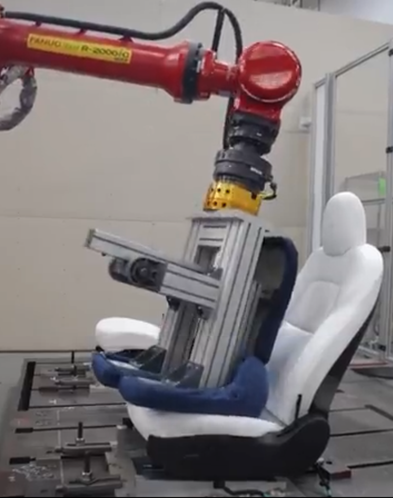

Tesla Seat Ingress/Egress Fixture Design
Designed the fixture orientation and mounting layout for a FANUC R-2000iC robotic ingress/egress durability test — determining seat position, incline angle, and clamp locations on a T-slot table so the robot's torso-shaped end effector accurately simulated a real occupant sitting down and getting out.
Fixture Design Ingress/Egress Testing FANUC R-2000iC CATIA V5 Ergonomic Simulation Seating Durability
Test Setup

Fixture Design & Testing
The Problem
Tesla's seating components must survive thousands of ingress/egress cycles over the vehicle's lifetime. To validate durability at scale, the team used a FANUC R-2000iC industrial robot arm fitted with an aluminum extrusion end effector shaped like a human torso. The robot performs automated sit-down and stand-up motions into the seat, simulating real occupant behavior at high cycle counts.
My job was to determine how to orient and fixture the seat on the T-slot table so the robot's pre-programmed path accurately simulated a real person's ingress and egress. This meant getting three things right simultaneously:
- Seat incline angle: The seat had to be tilted to its as-installed angle on the table so the robot's torso end effector would make contact with the bolster, cushion, and backrest in the same sequence and at the same angles a real occupant would.
- Mounting position on the table: The seat's fore/aft and lateral position on the T-slot table had to place it within the robot's workspace envelope while maintaining the correct spatial relationship between the seat H-point and the robot's end effector trajectory.
- Toggle clamp locations: The seat was secured to the T-slot table with toggle clamps. Clamp placement had to provide rigid fixturing without interfering with the robot's motion path or introducing artificial constraints that would alter how the seat structure responded to loading.
Why Orientation Matters
If the seat is mounted a few degrees off or shifted forward on the table, the robot's torso hits the seat bolster at the wrong angle and the contact forces don't match real-world ingress. The test data would show wear patterns and failure modes that don't occur in actual vehicles — invalidating the entire test campaign and potentially letting a real durability issue ship undetected.
Fixture Setup Details
- T-slot fixture table: The seat mounts directly to the table surface using toggle clamps threaded into the T-slot channels, providing a rigid base that can be reconfigured for different seat variants.
- Torso end effector: The FANUC R-2000iC carries an aluminum extrusion frame shaped to approximate a human torso. This end effector performs the ingress (sitting down) and egress (standing up) motion profiles into the fixtured seat.
- Ergonomic alignment: Seat position and angle were set to replicate the as-installed geometry in the vehicle, ensuring the robot's contact trajectory matches the biomechanics of a real occupant entering and exiting.
| Parameter | Value |
|---|---|
| Robot platform | FANUC R-2000iC |
| Test objective | Ingress/egress durability & cycle-life validation |
| End effector | Aluminum extrusion torso surrogate |
| Fixture table | T-slot table with toggle clamps |
| CAD software | CATIA V5 / 3DEXPERIENCE |
| Validation method | Automated robotic ingress/egress cycling |
Engineering Approach
The fixture orientation followed a structured workflow within Tesla's seating engineering team:
- Vehicle reference geometry: Started from the seat's as-installed position in the vehicle — incline angle, H-point location, and surrounding trim clearances — to establish the target orientation on the fixture table.
- Robot workspace mapping: Verified the seat position placed the ingress/egress contact zone within the FANUC R-2000iC's reachable workspace, accounting for the torso end effector's swept volume through the full motion profile.
- CAD layout in CATIA V5: Modeled the seat, T-slot table, toggle clamp positions, and robot reach envelope together to confirm clearances and alignment before fabrication.
- Toggle clamp placement: Located clamps to provide rigid fixturing without interfering with the robot's motion path or altering the seat structure's natural response to loading.
- Validation & iteration: Ran automated ingress/egress durability cycles, compared wear patterns to field data, and iterated on seat design. Design tweaks improved cycle life by ~10%.